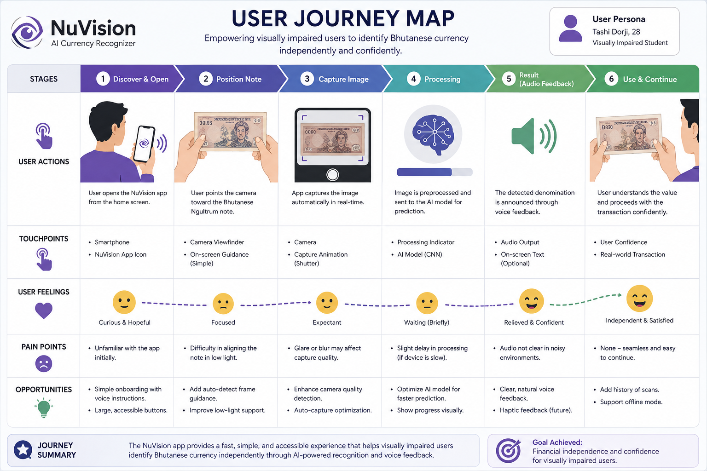

AI-powered mobile app for real-time Ngultrum banknote recognition
NuVision is an AI-powered assistive mobile application developed to help visually impaired individuals independently identify Bhutanese Ngultrum currency notes using smartphone camera technology. The application captures real-time images of banknotes and processes them through a trained deep learning model capable of recognizing different currency denominations accurately.
The primary objective of the project is to improve financial accessibility and independence for visually impaired users by reducing their reliance on other people during financial transactions. In Bhutan, there are limited technological solutions specifically designed for local currency recognition, creating a significant accessibility gap for blind and visually impaired individuals.
NuVision addresses this issue by combining computer vision, image preprocessing, deep learning, and speech feedback technologies into a simple and accessible mobile experience. Once a banknote is detected, the application provides audio feedback announcing the currency denomination, allowing users to confidently handle daily financial activities independently.
The system was designed with accessibility-first principles, ensuring simple navigation, minimal interaction complexity, and fast prediction response times. The application also includes image enhancement techniques to improve detection performance under different lighting conditions, backgrounds, and camera angles.
Visually impaired individuals in Bhutan often face challenges when identifying Bhutanese Ngultrum banknotes during daily transactions. Since different denominations share similar physical characteristics such as size and texture, users frequently depend on family members, shopkeepers, or strangers to confirm the value of their money.
This dependency can reduce personal confidence, create privacy concerns, and increase the risk of financial mistakes or exploitation. Existing currency recognition applications mainly focus on widely used international currencies and provide limited or no support for Bhutanese Ngultrum notes.
The absence of localized assistive solutions motivated the development of NuVision. The project aims to provide an affordable and accessible AI-driven mobile application capable of recognizing Bhutanese currency notes in real time while delivering voice-based feedback suitable for visually impaired users.
AI/ML Mobile Application
Academic Project • 2025 - 2026
Machine Learning & Application Developer
Group Project
Python
TensorFlow, CNN
OpenCV
Google Colab, GitHub
The primary target users of NuVision are visually impaired and blind individuals in Bhutan who face difficulties identifying Bhutanese currency notes during everyday financial transactions.
The application is designed for users who require a simple, accessible, and reliable mobile solution capable of providing quick voice-based currency recognition. Many visually impaired individuals depend heavily on assistance from others during shopping, transportation payments, and cash handling activities, which can reduce independence and confidence.
NuVision focuses on accessibility-centered interaction by minimizing unnecessary user actions and providing straightforward camera-based detection with audio responses. The system is also designed to support users with limited technical experience through a clean and simple interface.
Visually impaired individuals often rely on other people to identify currency denominations during transactions, reducing financial independence and privacy.
Difficulty identifying banknotes can lead to accidental overpayment, confusion during transactions, or vulnerability to dishonest behavior.
Most existing currency recognition applications do not support Bhutanese Ngultrum notes, creating a technology accessibility gap for local users.
Age: 28 | Occupation: Student
Problem Statement: Tashi is visually impaired and frequently struggles to independently identify Bhutanese currency during daily purchases and transportation payments. He wants a fast and reliable mobile solution that can accurately recognize currency notes and provide voice feedback without requiring assistance from others.
Age: 42 | Occupation: Small Business Owner
Problem Statement: Pema handles cash transactions regularly but finds it difficult to confidently distinguish different Ngultrum denominations. He requires an easy-to-use application capable of working in real-time under different lighting conditions while maintaining accessibility and simplicity.

The user journey begins when the visually impaired user opens the NuVision application during a financial transaction. The user points the smartphone camera toward a Bhutanese currency note, and the application captures the image in real time.
The captured image is processed using image preprocessing techniques before being passed to the trained CNN model for prediction. Once the denomination is recognized, the application immediately provides audio feedback announcing the detected currency note.
The entire interaction is designed to be fast, accessible, and simple, minimizing user effort while improving confidence and independence during financial activities.
Early paper wireframes focused on creating a minimal interface with large buttons, simple navigation, and camera accessibility for visually impaired users.
The second iteration refined the camera detection workflow and simplified the interaction process to reduce unnecessary steps during real-time usage.
The low-fidelity prototype focused on validating the main user flow, including camera activation, note scanning, and audio feedback interaction. Simple grayscale layouts were used to prioritize usability and accessibility testing before visual styling.
The high-fidelity prototype introduced improved visual consistency, accessible interaction elements, and smoother user flow integration. User feedback from testing sessions was incorporated to improve clarity, responsiveness, and usability.
The AI model was trained using a custom dataset containing Bhutanese Ngultrum banknotes collected under different lighting conditions, camera angles, and backgrounds. Since no publicly available Bhutanese currency dataset existed, manual data collection and preprocessing were necessary.
Data augmentation techniques such as rotation, flipping, zooming, and brightness adjustment were applied to improve model generalization and increase prediction robustness.
A Convolutional Neural Network (CNN) architecture was implemented for image classification. The model learned visual features from currency images and classified multiple Ngultrum denominations with improved recognition accuracy.
OpenCV was integrated into the system for image preprocessing tasks including resizing, normalization, and noise reduction before prediction.
Usability testing was conducted to evaluate the accessibility, prediction speed, and interaction simplicity of the NuVision application. Testing focused on determining whether users could comfortably complete currency detection tasks independently and efficiently.
The evaluation process included interface observation, accessibility feedback collection, and prediction accuracy testing under different environmental conditions such as varying lighting and camera positioning.
NuVision was implemented by combining computer vision, deep learning, and accessibility-focused interaction design into a single mobile-based solution. The application workflow begins by capturing currency images using the smartphone camera and processing them through preprocessing pipelines before prediction.
The processed images are passed into a trained CNN model capable of recognizing Bhutanese Ngultrum denominations in real time. After classification, the system generates audio feedback announcing the detected currency note to the user.
The application architecture was designed to remain lightweight and responsive while maintaining accessibility and prediction reliability. Accessibility-focused interaction design played a major role throughout implementation to ensure visually impaired users could comfortably interact with the system.
No publicly available dataset for Bhutanese Ngultrum notes existed, requiring manual image collection and preprocessing.
Different lighting conditions, note orientations, and camera quality variations affected prediction consistency during testing.
Designing an interface suitable for visually impaired users required careful simplification of interactions and accessibility-focused feedback systems.
Real-Time Currency Recognition
Voice Feedback Enabled
AI-Based Classification
Financial Accessibility
NuVision demonstrated how artificial intelligence and accessibility-focused design can be combined to solve real-world problems within the Bhutanese context. The project highlighted the importance of inclusive technology and showed the potential of AI-driven assistive applications in improving financial independence for visually impaired users.
Through this project, I gained practical experience in dataset preparation, computer vision, deep learning model training, accessibility-focused application design, and collaborative software development. The project also strengthened my understanding of real-world AI implementation challenges, especially regarding data limitations, usability, and system optimization.